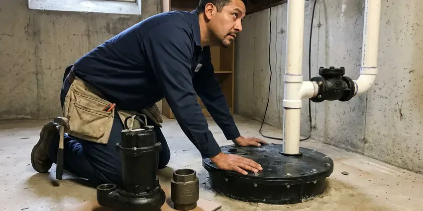

Backflow Preventer Installation in Barre, VT
Need a new backflow assembly for irrigation, a pool fill or a commercial building in Barre, VT? We install, test and document it.
- Licensed Vermont Plumbers
- Prompt, Reliable Installation
- Code Compliant
- Code-Compliant Systems

Safeguard Your Water Supply in Barre, VT.
Don't compromise on water safety, call us for a professional installation quote today.
Your Go-To for Backflow Preventer Installation in Barre, VT
CKV Plumbing works with water providers that enforce cross-connection control programs and require annual testing. We install reduced pressure zone assemblies, double check valves and pressure vacuum breakers to manufacturer and code specs, then submit test results so your account stays in good standing.
Our expertise includes:
- Double Check Valve Assembly Installation
- RPZ, double check and pressure vacuum breaker assembly installation
- Residential & Commercial Systems

Additional Plumbing Installation Services in Barre, VT
We install water heaters, pumps, lines, and fixtures across Barre, VT with careful, permitted work that passes inspection the first time.


Customers
Why Choose CKV Plumbing for Backflow Preventer Installation in Barre, VT?
Choosing the right plumbing partner for backflow preventer installation is vital for your health and property. We install high-quality devices built to prevent contaminated water from flowing back into your clean water lines.
- Water Safety, A backflow preventer keeps contaminated water from flowing back into your clean drinking water supply.
- Tested Onsite, Certified testers verify every new device before it goes into service.
- Code Compliance, Many municipalities in Vermont require backflow preventers for certain plumbing connections, and we make sure you meet all local codes.
Citywide Coverage
CKV Plumbing provides full backflow preventer installation across every neighborhood of Barre. Whether you are downtown or in the surrounding suburbs, our certified plumbers are ready to help you promptly.
Experienced Team
Our team includes certified backflow testers who understand how each assembly works inside, from relief valves to check springs. That knowledge leads to cleaner installs and fewer failed tests.
Safety-First Approach
Backflow preventers protect public health, so we install them to manufacturer orientation, clearance and drainage requirements. RPZ assemblies are installed where relief valve discharge will not flood a building or damage property.
Trusted Certified Barre Plumbing Services Professionals
At CKV Plumbing, we take pride in providing certified plumbing services throughout Barre, VT. Backed by recognized industry credentials, our experienced plumbers combine technical skill with genuine customer care. Whether it is repair, installation, or maintenance, we follow strict safety and quality standards to deliver long-lasting results you can trust.
Call Us Now PHCC Plumbing Contractor Recognition
PHCC Plumbing Contractor Recognition Better Business Bureau (BBB) Accreditation
Better Business Bureau (BBB) Accreditation Angi Certified Pro
Angi Certified Pro ISO 9001 Quality Management Certification
ISO 9001 Quality Management CertificationReliable Backflow Preventer Installation Services in Barre, VT
Backflow Prevention for Irrigation Systems in Barre, VT
Irrigation systems in Barre, VT are a common source of backflow, as stagnant water and lawn chemicals can be drawn back into the potable water supply. Installing a dedicated backflow preventer for your sprinkler system is often a local code requirement. We specialize in selecting and installing the correct device, such as a pressure vacuum breaker or atmospheric vacuum breaker, to protect your home's main water line from contaminants introduced by your landscape irrigation.

Commercial Backflow Prevention Systems in Barre, VT
Businesses in Barre, VT carry a greater responsibility to prevent water contamination because of the scale and complexity of their plumbing systems. CKV Plumbing provides comprehensive commercial backflow preventer installation for restaurants, industrial facilities, multi-unit residential buildings and more. We know the local codes and the importance of minimal disruption to your operations during installation. Our team keeps your business compliant and your water supply protected.
Backflow Testing and Certification in Barre
Most water providers require testable backflow assemblies to be certified at installation and then annually. Our certified testers check each valve's opening point, relief valve operation and differential pressure. If a device fails, we can repair or rebuild it right away with genuine parts. We submit passing results so you avoid compliance letters or service interruption.
Commercial Backflow Preventer Installation in Barre
Restaurants, salons, dental offices and light industrial buildings often need multiple backflow devices on soda machines, boilers, dishwashers and process water. We survey the building, identify each cross-connection and install containment and isolation assemblies as required. Work is scheduled after hours or on weekends when needed to keep from shutting down your business. You receive documentation for each device for your records and your water provider.
Reduced Pressure Zone Assembly Installation in Barre, VT
RPZ assemblies offer the highest level of protection and are required for high hazard connections like commercial kitchens, medical facilities, chemical injection and car washes. They include two independent check valves with a relief valve that dumps water if either check fails. Because the relief valve can discharge, we plan for drainage and install the assembly above grade where it can be tested. We carry trusted brands like Watts, Febco, Wilkins and Apollo.
Code-Compliant Backflow Installation in Barre, VT
Navigating the plumbing codes for backflow prevention in Barre, VT can be challenging. CKV Plumbing stays up to date with local and state regulations so every installation is fully compliant. Plumbing in Vermont follows state plumbing rules based on a national model code with state amendments, and the state licenses plumbers. From proper device selection and placement to required permits and inspections, we handle every part of code compliance. Your system works as intended and avoids fines or expensive rework down the line.
Irrigation Backflow Preventer Installation in Barre
Landscape irrigation is the most common reason homeowners need a backflow device. Fertilizer, herbicides and stagnant water in sprinkler and drip lines can be siphoned into your drinking water if pressure drops. We install pressure vacuum breakers or double check assemblies based on local requirements and the design of your system. Above-ground installs are set at least 12 inches above the highest sprinkler head when a PVB is used.

Residential Backflow Preventer Installation in Barre
For homeowners in Barre, protecting your family's drinking water is the top priority. We install many types of backflow preventers, often required for irrigation systems, fire suppression lines or properties with alternative water sources. Our plumbers will assess your home's plumbing layout to recommend the right device, meeting local health department regulations and protecting your potable water supply. We handle everything from small residential devices to larger systems.
Backflow Preventer Installation Near Me in Barre, VT
Our team is well acquainted with the plumbing infrastructure and municipal water requirements throughout Barre. This local expertise means we can install your backflow preventer quickly and efficiently, so it works properly and provides lasting protection for your water supply. Do not risk your water safety with just anyone, choose the local pros.
When you search for 'backflow preventer installation near me' in Barre, VT, you want a local, reliable plumber who understands the regulations in this area. CKV Plumbing is your trusted local expert, providing prompt and professional service right in your neighborhood. We make sure your installation meets all state and local codes.
CKV Plumbing at a Glance
- Licensed and insured plumbers serving Barre, VT
- 24/7 emergency service with same-day scheduling
- Clear written estimates, no hidden fees
- 4.8-star rated by 553+ Vermont customers
Barre Map
Barre Information
- Population
- 8,387
- Area codes
- Local
- Service area
- Barre and communities within 40 miles
- Nearby
- Montpelier, St. Johnsbury, Middlebury, Essex Junction
With landscape irrigation, backyard pools and active cross-connection programs, homes and businesses in Barre, VT rely on properly installed backflow preventers to keep drinking water safe.
Expert Services
Trust our professionals for reliable CKV Plumbing solutions in Barre, VT.
Our Specialized Plumbing Services in Barre, VT
At CKV Plumbing, we provide a complete range of plumbing services across Barre, VT. From leak detection to full system installations, our team ensures fast, precise, and affordable service for both residential and commercial properties. Explore our core services below:


How Our Backflow Preventer Installation Process Works in Barre, VT
Here is how we go from your first call to a certified, documented backflow assembly.
Request a Quote
Call (802) 209-5139 and share any notice you received from your water provider. We will confirm the required device type and give you a firm price.
Install the Assembly
We shut off water, install the correct assembly with unions and test cocks, and add an enclosure if needed. Water is restored as quickly as possible.
Test and Certify
A certified tester checks the new device and tags it. We send the results to your water provider and leave you a copy.
Frequently Asked Questions About Backflow Preventer Installation in Barre
The cost for backflow preventer installation in Barre, VT can range from approximately $300 to $1,500, depending on the type of device required, such as a DCVA or an RPZ, the complexity of the installation and any changes needed to existing plumbing. Commercial installations with larger devices may cost more. We provide a detailed, upfront quote after an on-site assessment.
We install all common types of backflow preventers, including reduced pressure zone assemblies, pressure vacuum breakers and double check valve assemblies. Our team will recommend the right device based on your property's hazard level and local plumbing codes in Barre.
Yes, CKV Plumbing stands behind our work. We offer a warranty on our backflow preventer installations, covering both the workmanship and the installed device. Specific warranty details will be included with your quote and invoice, giving you peace of mind.
We regularly install high-quality backflow preventers from trusted brands such as Watts, Wilkins by Zurn, Apollo and Conbraco. Our plumbers are experienced with a wide range of devices and can recommend the best option for your application and budget.
We install Watts, Febco, Wilkins by Zurn and Apollo assemblies. Each has easy to find repair kits, which keeps future service affordable.
Most water providers require testable assemblies to be tested at installation and then every year. Some high hazard facilities may be tested more often.
CKV Plumbing stands behind our work with a full warranty on our backflow preventer installations. This warranty covers both the labor and the installed device, providing you with peace of mind. Specific warranty details will be provided with your quote.
Signs of a failing backflow preventer include discolored or foul-smelling water, a noticeable drop in water pressure, visible leaks around the device or water discharging from the relief valve on an RPZ. If you notice any of these, call us for an inspection in Barre.
What People Are Saying About Our Plumbing Experts?

Mark T.
When our office needed drain cleaning, CKV Plumbing provided quick, reliable service. The plumber arrived on time and made sure every drain flowed perfectly before leaving. Very satisfied.
Drain Cleaning · Montpelier, VT
Daniel K.
A pipe burst at 11 pm and they actually answered. The plumber showed up within the hour, shut everything down, and had us back to normal the next morning. Could not ask for more.
Emergency Plumbing · St. Johnsbury, VT
Patricia H.
We had a slab leak that two other companies could not find. CKV Plumbing located it in under an hour, explained our options, and the price matched the quote to the dollar.
Slab Leak Repair · Essex Junction, VT
Laura S.
I scheduled a water heater replacement, and the team made the process smooth and affordable. The new unit works perfectly, and they cleaned up after completing the job.
Water Heater Replacement · Montpelier, VTSofia M.
Two new toilets installed in one visit, no mess left behind, and the tech even adjusted a faucet he noticed was dripping. Fair pricing and really friendly.
Toilet Installation · Middlebury, VT
Emily R.
I called CKV Plumbing for plumbing repair, and the technician was fast, polite, and thorough. They explained the problem clearly and fixed it the same day. I will definitely hire them again. Highly recommended!
Plumbing Repair · Montpelier, VT